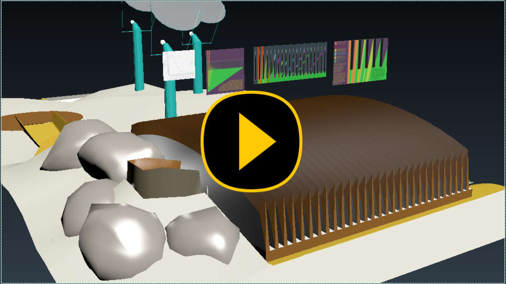

Here is a nerd-session about how the radiation blind works. It's a valuable
innovation, as the only other way to have natural light is to put 3.5 meters of
solid glass over a living space. Atriums hundreds of meters long later become
the first gardens and farms on the Moon.